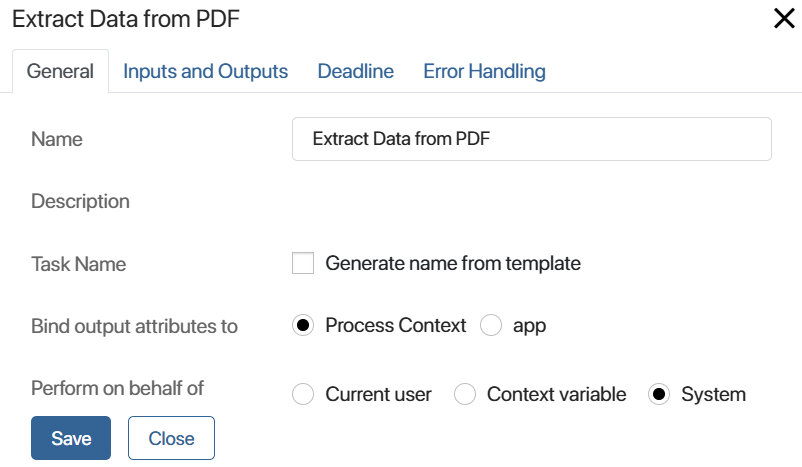
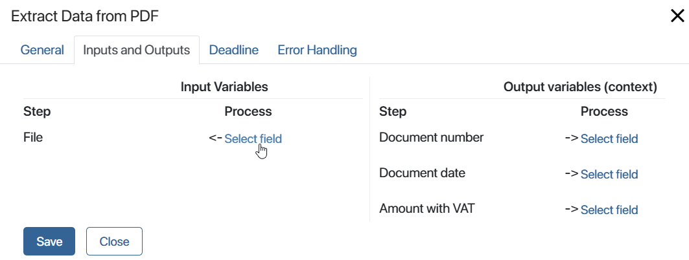
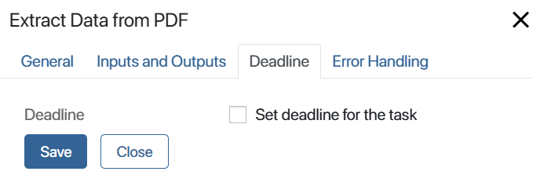
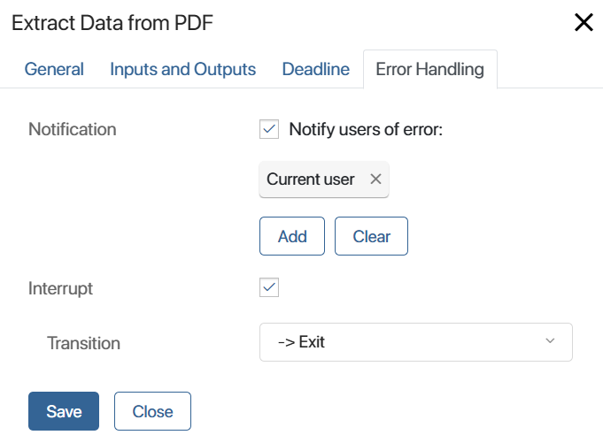

This activity is created in a custom module, where it is given a name, and the operation to be performed is configured. For example, the activity can call a process, execute a specified script, or call a delegated activity.
When the module is enabled, the graphical element appears in the business process designer on the Integrations tab. Then you can use it in any custom process. In this case, the activity configured in the graphical element will only be executed when the module is enabled. If you start a process instance with the module disabled, the user will receive an error notification at the activity execution stage.
Read about creating and customizing activities in modules in the Business processes activities article.
Let's take a closer look at what tabs and options are available in such graphical elements. These options may differ depending on the activity type and individual settings of the graphical element specified when creating it.
For example, let's customize the Extract Data from PDF activity, which performs an action of the Call Process type. It is used to extract the required data in a .pdf file during a custom process and write these data to context variables.
Preliminary process settings
First, create variables in the process context where the activity will be used. These variables are required to transfer data from the process context to the corresponding attributes of the activity configured in the module.
For this purpose, the process variables are mapped with the input and output attributes of the activity in its settings. In this way, the values of the input variables are sent to the graphical element to execute the customized activity, and the result of this operation is written to the output variables.
The following attributes are set in the Extract Data from PDF activity:
- Input: File of the Files (one) type.
- Output: Document number of the Number (integer) type, Document date of the Date/Time type, and Amount with VAT of the Money type.
Create the corresponding variables in the context of the process where you add the graphical element. Mapping of these variables is performed on the Inputs and Outputs tab.
Activity settings
On the process page, in the right toolbar, click the Integrations tab. Drag the Extract Data from PDF activity onto the flow chart and place it where you want to extract information from the electronic document and send these data to the process variables.
The activity is configured on the following tabs: General, Inputs and Outputs, Deadline, and Error Handling.
General tab
The General tab contains general information about the operation.

- Name. Enter the activity name. It will be displayed on the process flow chart.
- Description. Do not fill out this field. Here, you can see the description of the action if such description was added when customizing a script, process call, or delegated activity.
- Task Name. You can specify a template for the name of the custom task if it is generated in the activity. To do this, enable the Generate name from template option and specify the template using context variables in the same way as in the settings of the Task element.
- Bind output attributes to. Specify where the result of the activity execution will be written to. You can select the following options:
- Process Context. The values of the output attributes will be bound to business process context variables.
- App. The values of the output attributes will be bound to the fields of the app added to the business process context.
- Variable*. In the process context, select the app whose fields will be mapped to the output attributes of the activity.
- Perform on behalf of. The option is available only for the Call process activity type. Select the user who will be specified as the initiator of the activity on the process instance page:
- Current user. The user who starts the process instance.
- Context variable. Select a variable of the Users (one) type from the process context. The activity will be performed on behalf of the employee that is specified in this variable. For example, you can select a context variable with the user in whose swimlane the activity is located.
- System. The activity will be executed on behalf of the user selected as the system supervisor.
Inputs and Outputs tab
On this tab, you can bind the attributes created in the activity with the process context variables. The standard mapping form contains two columns. The Step columns contain the activity input and output variables. In the Process column of each part, select the variables of the process in which the activity is used. To do this, click Select field next to the activity input and output variables and specify the process variable you want to match in the drop-down list. The matched variables must be of the same type.

When creating a module activity, you can customize the binding form, as well as configure the dynamic binding, i.e. create variables for binding using a script. In such cases, the Activity Settings tab will be displayed instead of the Inputs and Outputs tab. It is filled out according to the options set when creating the activity.
Read more about it in the Binding and other aspects of business process activities article.
Deadline tab
The tab is available in the Delegated activity and Call process activity. If you create a task for employees using this graphical element, you can specify time limits for its execution and define users who will be notified if the specified deadlines are violated. The settings are the same as in standard activities of the Task type.

Error handling tab
For custom activities, you need to add an escalation transition to the process. This allows you to avoid errors during the execution of a business process if the module is disabled. You can also set up the error notification to users.

- Notification. Select this option if you want BRIX to notify the responsible users in case of an error. Specify these users: the current user, a context variable such as an initiator, a group, or an org chart item. Please note that the current user is the executor who completed the task that is placed just before the custom activity on the process diagram.
- Interrupt. Check the option and specify in the Transition field which branch the process will follow if an error occurs. The transition specified in these settings will be marked on the process diagram with the
 icon.
icon.
Once the settings are set, click Save.
Found a typo? Select it and press Ctrl+Enter to send us feedback